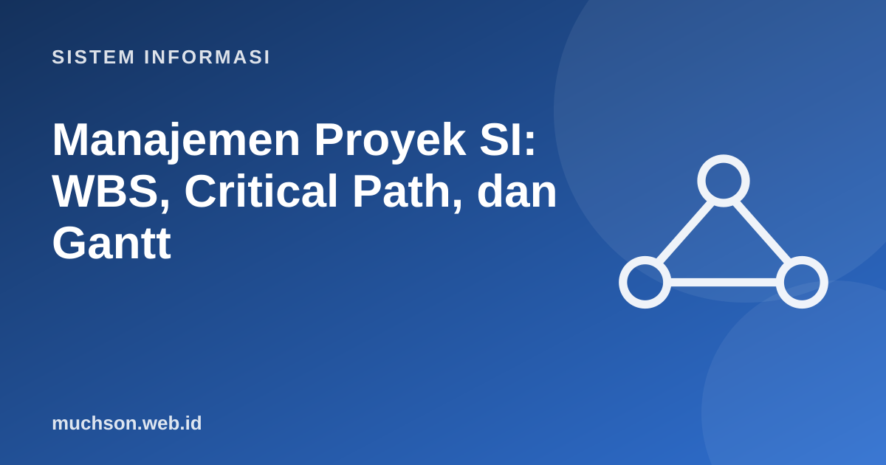

Beranda › Artikel › Sistem Informasi
Sistem InformasiManajemen Proyek SI: WBS, Critical Path, dan Gantt
Proyek perangkat lunak terkenal terlambat dan melebihi anggaran. Manajemen proyek tidak menjamin sukses, tetapi memberi alat untuk melihat masalah lebih awal: apa yang harus dikerjakan, urutannya, siapa yang mengerjakan, dan jalur mana yang tidak boleh terlambat sedikit pun.
Sebaiknya sudah paham: SDLC

Setelah membaca dan mencoba materi ini, Anda mampu:
- mendefinisikan proyek, ruang lingkup, dan segitiga batasan
- menyusun WBS (work breakdown structure)
- menghitung critical path method: ES, EF, LS, LF, dan float
- membaca bagan Gantt
- mengidentifikasi dan menilai risiko proyek
Proyek dan batasannya
Proyek adalah upaya sementara untuk menghasilkan produk atau layanan unik, dengan awal dan akhir yang jelas. Tiga batasan utama saling bertukar: ruang lingkup, waktu, dan biaya, dengan mutu di pusatnya. Mengubah salah satu hampir selalu memengaruhi yang lain.
WBS: memecah pekerjaan
WBS memecah hasil akhir proyek menjadi paket kerja yang cukup kecil untuk diperkirakan dan ditugaskan. Aturan 100%: WBS harus mencakup seluruh pekerjaan, tidak lebih dan tidak kurang.
1. Sistem Akademik Kampus
1.1 Analisis
1.1.1 Wawancara pemangku kepentingan
1.1.2 Dokumen kebutuhan
1.2 Perancangan
1.2.1 Rancangan basis data
1.2.2 Rancangan antarmuka
1.3 Pembangunan
1.3.1 Modul KRS
1.3.2 Modul nilai
1.4 Pengujian dan penerapan
1.4.1 Uji sistem dan UAT
1.4.2 Pelatihan dan migrasi dataCritical Path Method (CPM)
CPM mencari rangkaian kegiatan terpanjang yang menentukan durasi minimum proyek. Kegiatan di jalur ini disebut kritis: bila terlambat sehari, proyek terlambat sehari. Kegiatan lain memiliki float (kelonggaran).
| Istilah | Rumus | Arti |
|---|---|---|
| ES (earliest start) | max(EF semua pendahulu) | Paling awal kegiatan dapat mulai |
| EF (earliest finish) | ES + durasi | Paling awal selesai |
| LF (latest finish) | min(LS semua penerus) | Paling lambat selesai tanpa menunda proyek |
| LS (latest start) | LF − durasi | Paling lambat mulai |
| Float (slack) | LS − ES | Kelonggaran; 0 berarti kritis |
# Kegiatan: nama -> (durasi hari, [pendahulu])
kegiatan = {
"A Analisis": (5, []),
"B Desain DB": (4, ["A Analisis"]),
"C Desain UI": (3, ["A Analisis"]),
"D Modul data": (8, ["B Desain DB"]),
"E Modul tampilan": (6, ["C Desain UI"]),
"F Integrasi": (4, ["D Modul data", "E Modul tampilan"]),
"G Pengujian": (5, ["F Integrasi"]),
}
# forward pass
ES, EF = {}, {}
for k in kegiatan: # urutan dibuat sudah topologis
dur, pend = kegiatan[k]
ES[k] = max((EF[p] for p in pend), default=0)
EF[k] = ES[k] + dur
durasi_proyek = max(EF.values())
# backward pass
LF, LS = {}, {}
penerus = {k: [j for j, (_, p) in kegiatan.items() if k in p] for k in kegiatan}
for k in reversed(list(kegiatan)):
dur = kegiatan[k][0]
LF[k] = min((LS[s] for s in penerus[k]), default=durasi_proyek)
LS[k] = LF[k] - dur
print(f"{'kegiatan':<18}{'dur':>4}{'ES':>4}{'EF':>4}{'LS':>4}{'LF':>4}{'float':>6}")
for k, (dur, _) in kegiatan.items():
fl = LS[k] - ES[k]
print(f"{k:<18}{dur:>4}{ES[k]:>4}{EF[k]:>4}{LS[k]:>4}{LF[k]:>4}{fl:>6}{' <- kritis' if fl == 0 else ''}")
print("durasi proyek:", durasi_proyek, "hari")
print("jalur kritis:", " -> ".join(k.split()[0] for k in kegiatan if LS[k] == ES[k]))kegiatan dur ES EF LS LF float
A Analisis 5 0 5 0 5 0 <- kritis
B Desain DB 4 5 9 5 9 0 <- kritis
C Desain UI 3 5 8 8 11 3
D Modul data 8 9 17 9 17 0 <- kritis
E Modul tampilan 6 8 14 11 17 3
F Integrasi 4 17 21 17 21 0 <- kritis
G Pengujian 5 21 26 21 26 0 <- kritis
durasi proyek: 26 hari
jalur kritis: A -> B -> D -> F -> G
Bagan Gantt
Gantt menampilkan kegiatan sebagai batang pada sumbu waktu. Ia mudah dibaca oleh pemangku kepentingan, tetapi tidak sebaik jaringan kegiatan dalam memperlihatkan ketergantungan.
ES = {"A":0,"B":5,"C":5,"D":9,"E":8,"F":17,"G":21}
EF = {"A":5,"B":9,"C":8,"D":17,"E":14,"F":21,"G":26}
nama = {"A":"Analisis","B":"Desain DB","C":"Desain UI","D":"Modul data","E":"Modul tampilan","F":"Integrasi","G":"Pengujian"}
print(" " * 16 + "".join(str(i % 10) for i in range(27)))
for k in ES:
print(f"{nama[k]:<16}" + " " * ES[k] + "#" * (EF[k] - ES[k])) 012345678901234567890123456
Analisis #####
Desain DB ####
Desain UI ###
Modul data ########
Modul tampilan ######
Integrasi ####
Pengujian #####
Mengelola risiko
| Risiko | Peluang | Dampak | Respons |
|---|---|---|---|
| Kebutuhan berubah di tengah jalan | Tinggi | Tinggi | Rilis bertahap, kontrol perubahan, backlog berprioritas |
| Anggota kunci keluar | Sedang | Tinggi | Dokumentasi, pasangan kerja, penyebaran pengetahuan |
| Estimasi terlalu optimis | Tinggi | Sedang | Estimasi tiga titik, cadangan waktu (buffer) |
| Integrasi dengan sistem lama sulit | Sedang | Tinggi | Uji integrasi lebih awal (spike) |
Estimasi tiga titik: E = (O + 4M + P) / 6 dengan O optimis, M paling mungkin, P pesimis (PERT). Contoh O=4, M=6, P=14 menghasilkan E = (4 + 24 + 14)/6 = 7 hari: lebih besar dari angka "paling mungkin" karena pesimis lebih jauh dari optimis.
1. Jika kegiatan C (desain UI) bertambah 2 hari menjadi 5 hari, apakah durasi proyek berubah?
2. Jika modul data (D) bertambah 3 hari?
3. Mengapa menambah orang pada proyek terlambat tidak selalu mempercepat?
4. Susun WBS tingkat dua untuk proyek aplikasi kasir.
- Proyek dibatasi lingkup, waktu, dan biaya; ketiganya saling bertukar dengan mutu.
- WBS memecah pekerjaan hingga paket yang dapat diestimasi.
- CPM: forward dan backward pass; float nol berarti kegiatan kritis.
- Gantt memudahkan komunikasi; risiko dikelola dengan peluang, dampak, dan respons.
- Estimasi PERT memperhitungkan ketidakpastian.
Tanya jawab
Apa beda CPM dan PERT?
Apa alat yang dipakai?
Bagaimana dengan proyek Agile?
Referensi
- Project Management Institute, A Guide to the Project Management Body of Knowledge (PMBOK Guide)
- Frederick Brooks, The Mythical Man-Month (Addison-Wesley, 1975)
- Kathy Schwalbe, Information Technology Project Management (Cengage)
- Ralph M. Stair dan George W. Reynolds, Principles of Information Systems (Cengage)